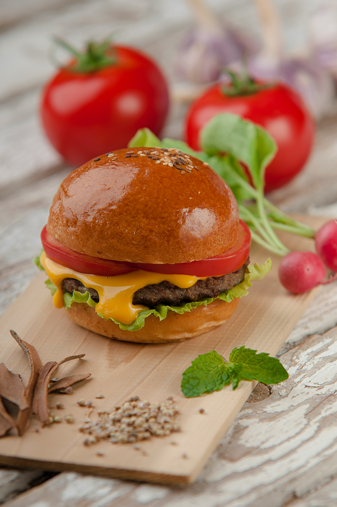

Cheeseburger

Ingredients
- 1 lb Ground Chuck
- Seasoned Salt
- Pepper
- American Cheese
- Buns
Steps
- Preheat grill or griddle.
- Gently form ground beef into four equal patties.
- Season patties generously with the seasoned salt and pepper on both sides.
- Grill patties for 5 minutes, then flip.
- Top the patties with your desired amount of American Cheese.
- Continue to grill until cheese melts and patties reach your desired temperature.
- Place buns on grill to toast while patties finish cooking.
- Remove patties from grill and place on toasted buns.
- Top with your preferred condiments, and enjoy!